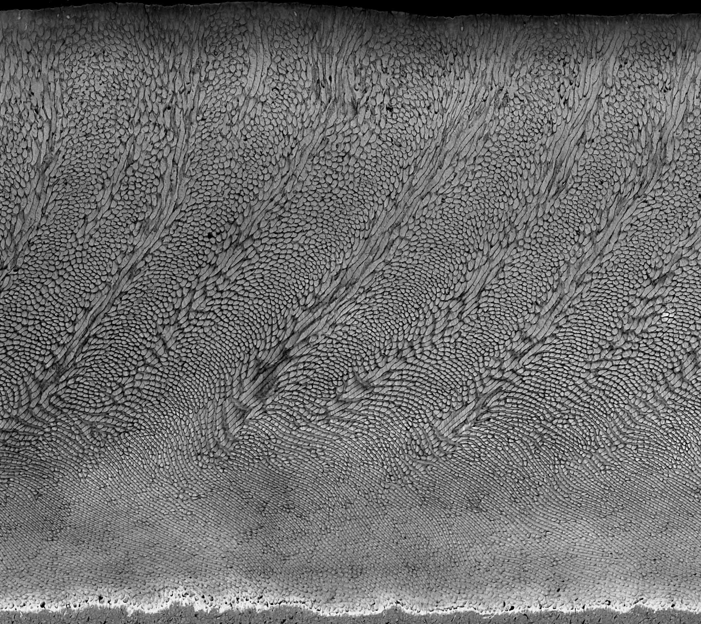
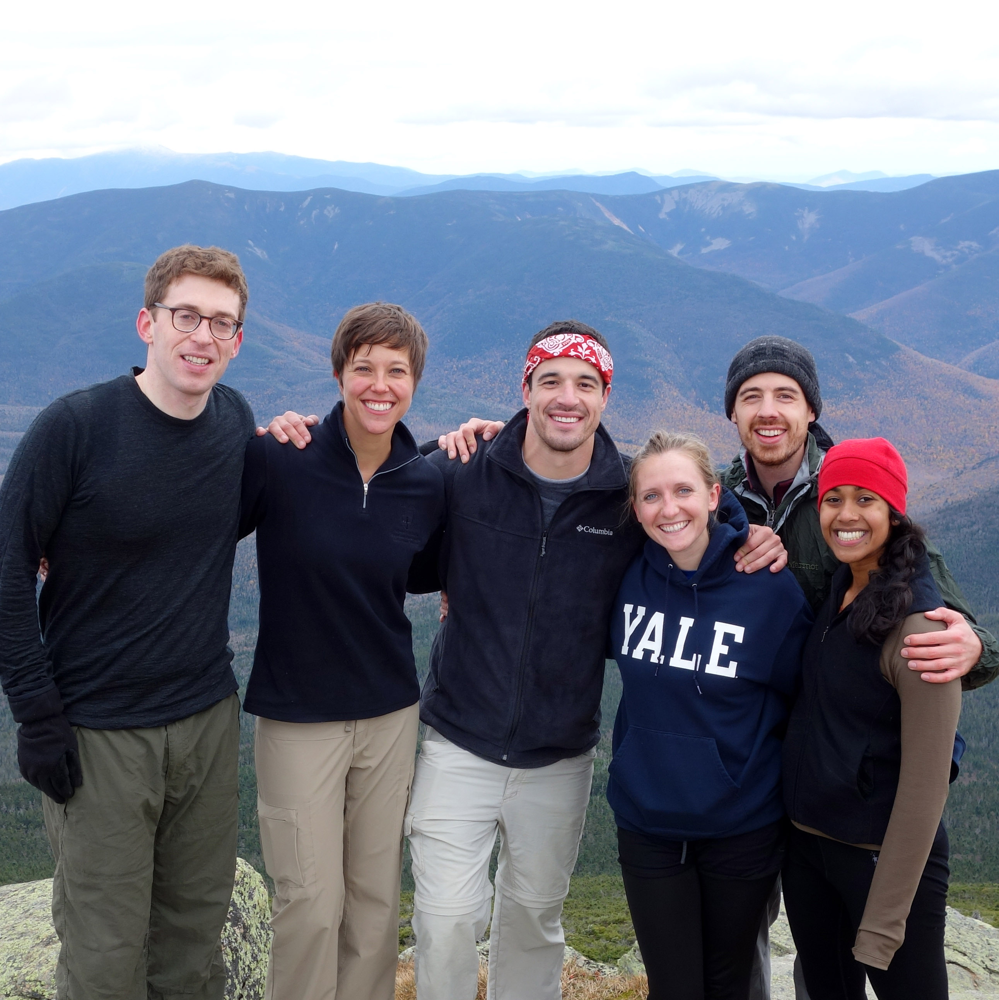

I am a postdoctoral research fellow in the Bidlack Laboratory at the Forsyth Institute in Cambridge, a Harvard-affiliated medical and dental nonprofit, and am a research associate in the department of Human Evolutionary Biology at Harvard University, where I received my PhD. I investigate mechanisms of tooth growth, and tools by which teeth can be turned into diagnostic indicators of environment, climate, and childhood exposure to pollutants in contemporary and ancient populations.
My doctoral work in human evolutionary biology demonstrated how seasonal hydrological patterns can be inferred from fossil teeth associated with human ancestral remains in east Africa, 2–5 million years ago. This work combined diverse methods including synchrotron imaging, live animal experimentation, field work in northern Kenya, stable light isotope geochemistry, physiological modeling, and computation-based optimization routines.
At the Forsyth I’ve developed these methods to investigate the genetic and proteomic patterns of tooth formation with Forsyth scientists. I am furthermore investigating how the environmental and climatic reconstruction techniques that I developed in my doctoral work can be employed to recover information about exposures to heavy metals and plastic pollutants in children.
Laboratory methods
In my work I use a variety of methods to study enamel formation, including work with animal models, computed tomography, stable light isotope geochemistry, proteomics, genetics, machine learning, and Markov Chain Monte Carlo simulations.
Fossil collection
My research involves collaboration with field teams and museums, sampling paleontological materials from field sites in order to reconstruct past environmental and behavioral patterns.
Computational modeling

Interpreting the large datasets produced by modern methods in biology requires computational tools and modeling. In my work I use physiological models, optimization routines, and machine learning tools to learn more about processes of growth, behavior, and environment from teeth.
Teaching and mentoring
At Harvard I've taught seminars introducing human evolution, taught and designed a class on human evolution and climate change, and worked as a fellowships tutor with students at the college for four years. I've worked as a teaching assistant in human anatomy, and have served as a teaching assistant for geology, ecology, paleontology, human evolution, and archaeology classes at the Turkana Basin Institute in Kenya.
Community
Science is highly collaborative, and today scientists rely not only on giants of the past, but stand on the shoulders of their peers. I am proud to work alongside scientists from many institutions and disciplines globally.
My C.V.
For a more detailed record of my research, publications, funding and presentations.